お茶目だった夫→17年後……「えええ！？」 驚きの姿が3800万再生「これぞ本物の垢抜け！」「本当に同じ旦那さん！？」【海外】
Yahoo!ニュース · 02 Nov · @carolinarinconf ♥1,552,617
Yahoo!ニュース · 02 Nov · @carolinarinconf ♥1,552,617
 3800万回
NEW
3800万回
NEW
ねとらぼ · 02 Nov · @carolinarinconf ♥1,552,617
 950万回
950万回
Yahoo!ニュース · 01 Nov · @khloeshowww ♥1,440,663
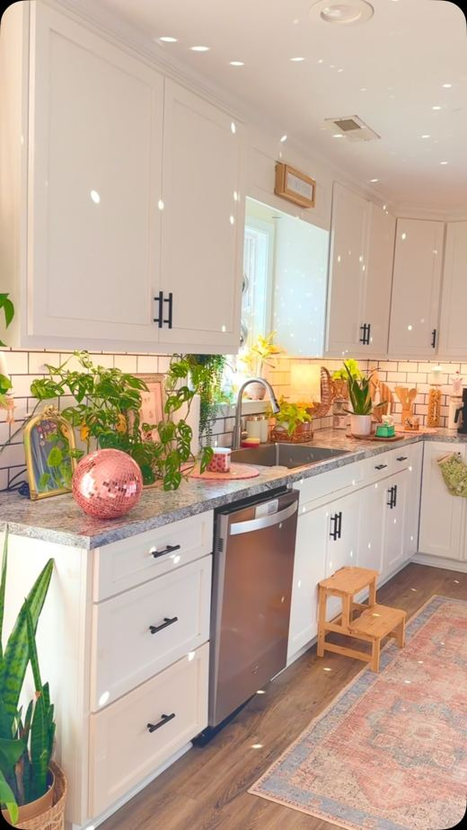
950万回ねとらぼ · 01 Nov · @khloeshowww ♥1,440,663
 545万回
NEW
545万回
NEW
ねとらぼ · 31 Oct · @cameliadiycraft ♥46,619
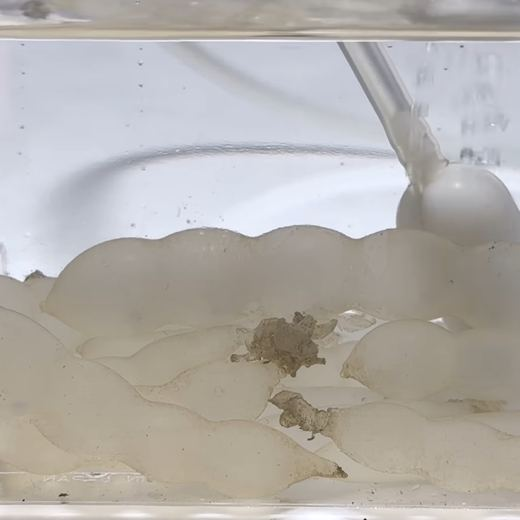
470万回 NEWねとらぼ · 01 Nov
 400万回
NEW
400万回
NEW
ねとらぼ · 01 Nov · @perorin0901 ♥76,908
 300万回
300万回
ねとらぼ · 01 Nov · @laniechurco ♥304,405
Yahoo!ニュース · 01 Nov · @laniechurco ♥304,405
千葉テレビ放送株式会社 · 02 Nov
 127万回
127万回
Excite エキサイト · 31 Oct
 122万回
122万回
Excite エキサイト · 01 Nov
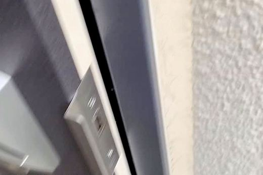
118万回 NEWExcite エキサイト · 02 Nov
ライブドアニュース · 01 Nov
 61万回
NEW
61万回
NEW
ライブドアニュース · 01 Nov
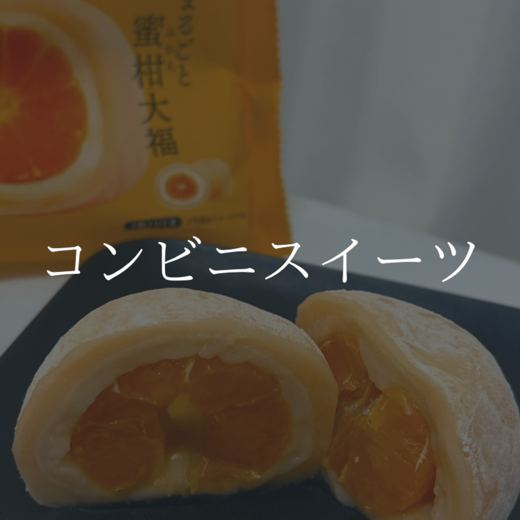
NEWTRILL · 02 Nov
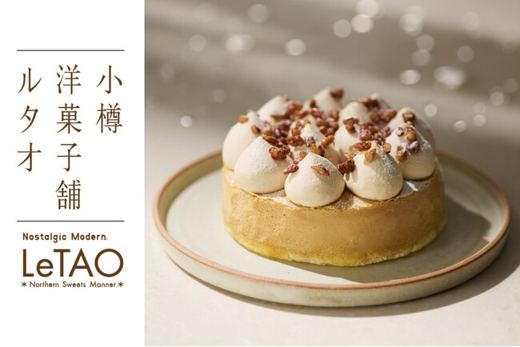
NEWニコニコニュース · 02 Nov
TRILL · 02 Nov
Yahoo!ニュース · 02 Nov
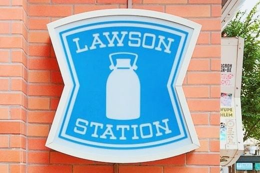
NEWBuzzFeed · 02 Nov
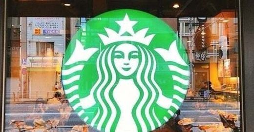
NEWハフポスト · 02 Nov
中日新聞Web · 02 Nov
 NEW
NEW
中日新聞Web · 02 Nov · @meru_nukumi ♥42,089
めざましmedia · 02 Nov
 NEW
NEW
東洋経済オンライン · 02 Nov
ふぉーちゅん(FORTUNE) · 02 Nov
smart-flash.jp · 02 Nov
 545万回
545万回
ねとらぼ · 31 Oct · @cameliadiycraft ♥46,619
Yahoo!ニュース · 02 Nov
cozre[コズレ] · 02 Nov

au Webポータル · 01 Nov · @miii____ie ♥44
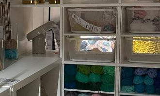
NEWYahoo!ニュース · 31 Oct
株式会社マーケティング研究協会のプレスリリース 株式会社マーケティング研究協会は2026年11月12日、オンラインセミナー「中食
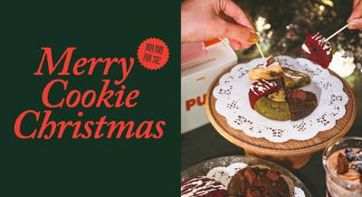
11/02 17:00 🗼 東京株式会社プレイヤーズプレイヤーのプレスリリース 秋冬限定「マロンカシス」「アップルシナモン」、全5店舗で好評発売中 昨年の開業以
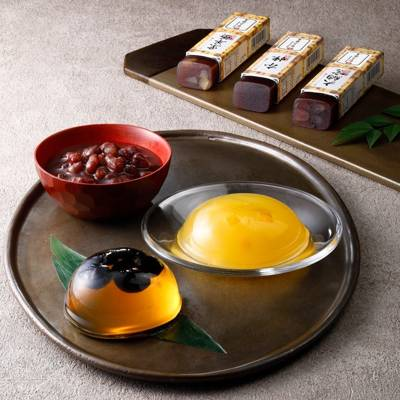
11/02 17:00 🗼 千葉米屋株式会社のプレスリリース 今年一年の感謝を込めた冬の贈り物。 なごみの米屋では、一部店舗・通信販売を除き「送料500円引」を
モエ ヘネシー ジャパン株式会社のプレスリリース 人と人を結ぶBOW（リボン）をコンセプトに、新商品＆限定ギフトボックスが登場
俺の株式会社のプレスリリース オープン記念！鯖寿司・カニクリームコロッケ・からすみそばに加え、俺のボルドーや獺祭など人気ドリンク
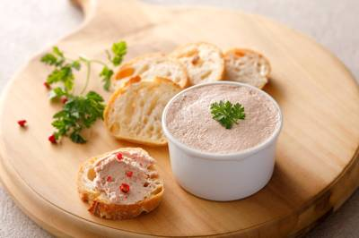
11/02 14:10 🗼 銀座スターゼン株式会社のプレスリリース スターゼン株式会社（本社：東京都港区、代表取締役社長：横田和彦）の子会社であるローマイヤ株
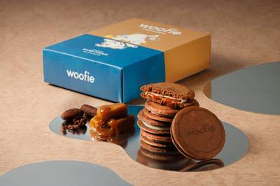
11/02 14:10 🗼 東京株式会社シュクレイのプレスリリース 人気No.1商品との食べ比べセット、『サンドクッキーアソート（ショコラ）』も新発売。 株式会
株式会社JR東日本クロスステーションのプレスリリース 新商品引き換えクーポンが当たる！おむすび処 ほんのり屋 公式Xでキャンペー
株式会社エルティーアールのプレスリリース ちいかわたちがサンタになっちゃった！ちいかわ、ハチワレ、うさぎの3個セットを限定のオリ
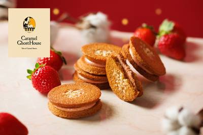
11/02 12:10 🗼 東京株式会社シュクレイのプレスリリース 今夏発売以来、人気No.1のチュイールに、季節限定の味わいが初登場！ 株式会社シュクレイ（代
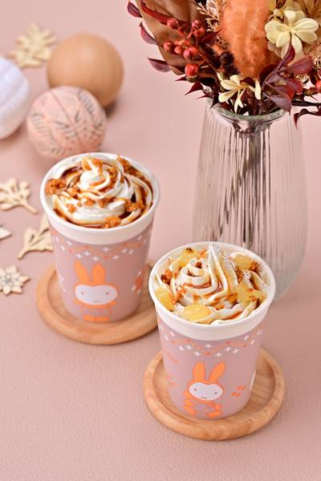
11/02 11:00 🗼 東京ベネリック株式会社のプレスリリース 冬の装いのミッフィーをデザインしたオリジナルスリーブ付きカップで提供 ※画像はイメージです
株式会社カヤックのプレスリリース 千葉発、カヤックと古谷乳業が生んだ『ミルクの束縛』が3周年！「ミルクコーヒー」「ミルクティー」
株式会社ファイブグループのプレスリリース 飲食業の未来を担う若者と地域の“楽しい”を一緒につくる 株式会社ファイブグループ（本社
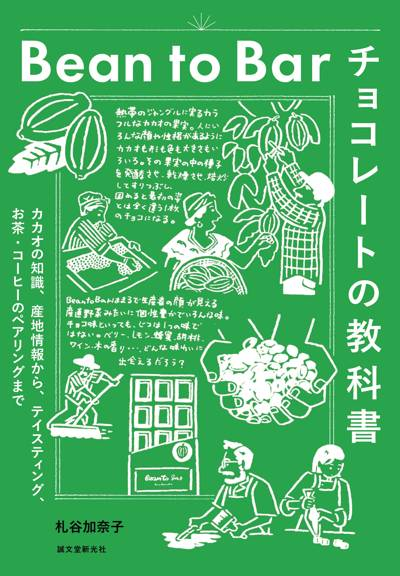
11/02 09:30 🗼 東京株式会社誠文堂新光社のプレスリリース 株式会社誠文堂新光社（東京都文京区）は、2026年11月6日（金）に、『Bean to B
株式会社栗山米菓のプレスリリース 各コンビによる、ばかうけを食べながらの“団欒フリートーク”にご注目！～2026年11月3日(火
うちのや株式会社のプレスリリース “家庭料理品質”の保存料無添加・常温長期保存可能なおかずパック『うちのや常温保存パック備蓄セッ
江部松商事株式会社のプレスリリース グランプリ1名・優秀賞2名を選出。受賞者をものづくりのまち・新潟県燕市に招き、授賞式と製造メ
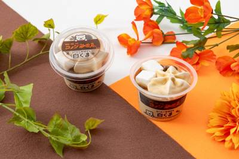
11/02 18:00 ❓ 不明株式会社セブン‐イレブン・ジャパンのプレスリリース ～北海道産練乳の濃厚な甘みとコーヒーの味わいが重なり合う、大人の白くま～
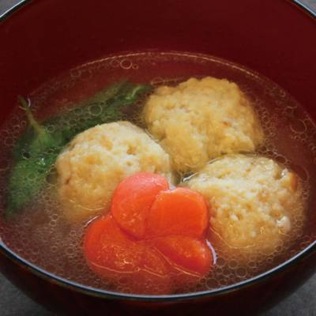
11/02 17:40 ❓ 不明ジーエフシー株式会社のプレスリリース 短時間で調理できる業務用食材、多彩なジャンルで多忙な厨房の業務効率化を支援いたします。 業
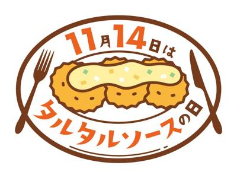
11/02 17:30 ❓ 不明キユーピー株式会社のプレスリリース タルタルソース発売60周年を機に、11月9日(月)からは、東京・福岡の「三陽食堂」店舗で「キ
株式会社フロジャポンのプレスリリース 〜 定番と新作が“期間入替”でお得に！ホール（約20cm）が税込335円引きの【特別価格
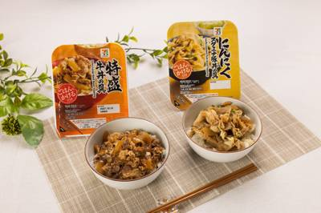
11/02 17:00 ❓ 不明株式会社セブン‐イレブン・ジャパンのプレスリリース 〜手頃に満足感を得られるおかずの需要にお応え～ 株式会社セブン‐イレブン・
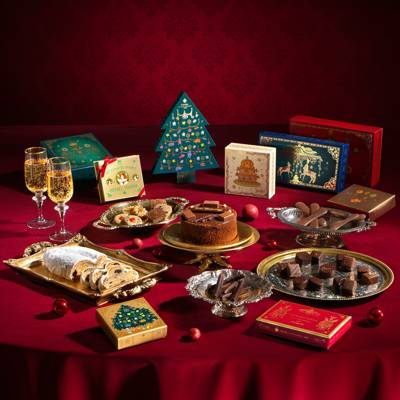
11/02 16:52 ❓ 不明デメル・ジャパン株式会社のプレスリリース 数量限定「デメルアドヴェントカレンダー 2026年版」など DEMEL Christm
カゴメ株式会社のプレスリリース ～ いちご味で飲みやすく、毎日続けやすい糖質オフ・低カロリー※2のすっきりとした味わい ～ カゴ
 11/02 15:00
❓ 不明
11/02 15:00
❓ 不明
人気商品の無料引換券が当たる５００くじ！ くじ発券期間：２０２６年１１月３日（火）～１１月１０日（火） ミニストップは、「韓国グ
株式会社Cake.jpのプレスリリース ～クリスマスの王道から名店の味、キャラクター・推し活、少人数向け、子どもと楽しめるケーキ
株式会社ジュンのプレスリリース 株式会社ジュン（本社：東京都港区、代表取締役社長：佐々木進）が展開するニューヨーク発のライフスタ
株式会社ロイズコンフェクトのプレスリリース 株式会社ロイズコンフェクト（北海道札幌市）は、クリスマスツリーをデザインした包装紙で
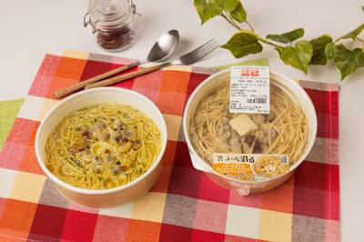
11/02 13:30 ❓ 不明株式会社セブン‐イレブン・ジャパンのプレスリリース 〜あさりの旨味とバターのコクを味わう 寒い時期にぴったりのスープパスタ〜
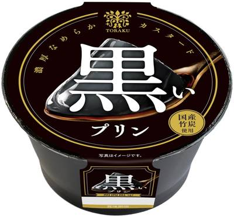
11/02 13:30 🌐 全国トーラク株式会社のプレスリリース トーラク株式会社（本社：兵庫県神戸市東灘区向洋町西5丁目5番、代表取締役社長：毛利 功一郎）は
ハーゲンダッツ ジャパン株式会社のプレスリリース ～おいしさのヒミツと開発者インタビューを紹介～ ハーゲンダッツ ジャパン株式
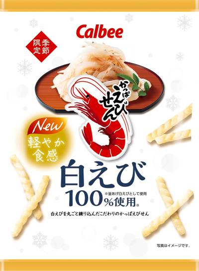
11/02 13:00 🌐 全国カルビー株式会社のプレスリリース 2026年11月9日（月）から全国のコンビニエンスストア先行で期間限定発売 ～「やめられない、
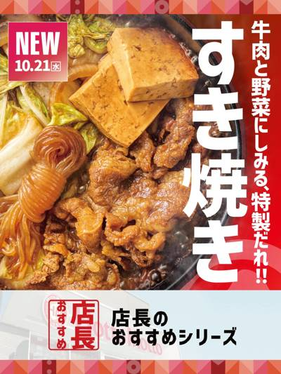
11/02 13:00 🌐 全国株式会社プレナスのプレスリリース 株式会社プレナスは、持ち帰り弁当の「Hotto Motto (ほっともっと)」を、2026年1
エスビー食品株式会社のプレスリリース エスビー食品株式会社は、日頃のご愛顧に対するお客さまへの感謝の気持ちを込めて、定番から新商
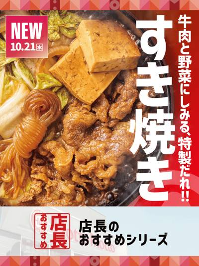
11/02 13:00 🌐 全国ほっともっとのプレスリリース 株式会社プレナスは、持ち帰り弁当の「Hotto Motto (ほっともっと)」を、2026年10月
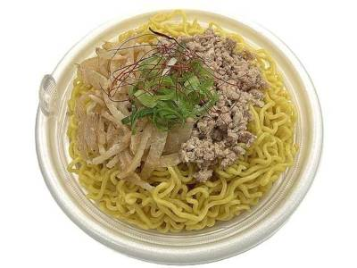
11/02 13:00 🚄 北海道株式会社セブン‐イレブン・ジャパンのプレスリリース 〜食べ応えのある大盛りシリーズ第1弾！11月4日（水）より順次発売〜 株式
株式会社SAKIGAKEホールディングスのプレスリリース 11月3日（火・祝）・4日（水）の2日間、アプリ登録者限定で創業記念価
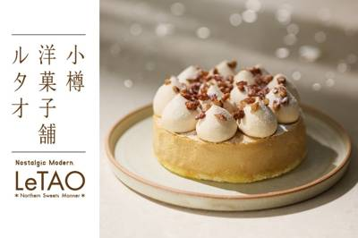
11/02 13:00 🌐 全国株式会社ケイシイシイのプレスリリース 「小樽洋菓子舗ルタオ」（株式会社ケイシイシイ、本社北海道千歳市）が展開する、小樽洋菓子舗
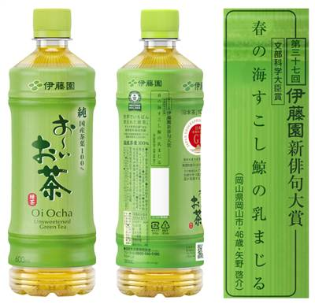
11/02 13:00 ❓ 不明株式会社伊藤園のプレスリリース 株式会社伊藤園(社長：本庄 大介、本社：東京都渋谷区)は、国内最大級の創作俳句コンテスト「第三十
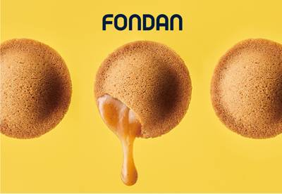
11/02 13:00 🚄 関西北海道コンフェクトグループ株式会社のプレスリリース FONDAN(フォンダン)初のPOP UP STOREをオープン。11月11
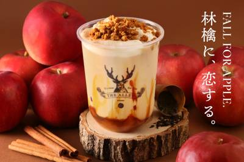
11/02 12:09 ❓ 不明株式会社ポトマックのプレスリリース お茶に恋をする、美しい生活を提案するティーストア「THE ALLEY（ジ アレイ）」は、20
株式会社ギンビスのプレスリリース ～11/9（月）より期間限定で販売～ 株式会社ギンビス（本社：東京都中央区、代表取締役社長：宮
八重洲地下街株式会社のプレスリリース 本場さながらのビリヤニや、天ぷらが人気の蕎麦、 老舗スパゲッティなどがランクイン！ 年末年
チロルチョコ株式会社のプレスリリース 2026年11月16日（月）より全国発売 チロルチョコ株式会社（東京都千代田区、代表取締役
モンマルシェ株式会社(本社：静岡県静岡市)が展開するフードブランド「野菜をMOTTO」は、清水エスパルスとのコラボレーション商品
株式会社パネスのプレスリリース 『燃焼』と『ととのい』が織りなす、終わりなき今を。スタッフ体験用として、1施設につき2袋（計20
八重洲地下街株式会社のプレスリリース 本場さながらのビリヤニや、天ぷらが人気の蕎麦、老舗スパゲッティなどがランクイン！ 年末年始
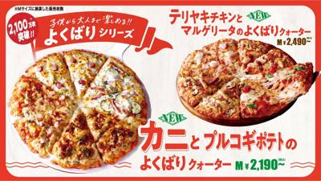
11/02 12:00 ❓ 不明株式会社フォーシーズのプレスリリース 期間限定 2026年11月4日（水）～2027年3月2日（火） 株式会社フォーシーズ（本
チロルチョコ株式会社のプレスリリース 2026年11月16日（月）より全国発売 チロルチョコ株式会社（東京都千代田区、代表取締役
カゴメ株式会社のプレスリリース 「めぐみめぐるAction！」で生産者を支援 ※画像はイメージです カゴメ株式会社（社長：奥谷晴
ル・クルーゼ ジャポン株式会社のプレスリリース ル・クルーゼ ジャポンは、華やかさに満ちた、光沢ある気品と静けさをまとったニュー
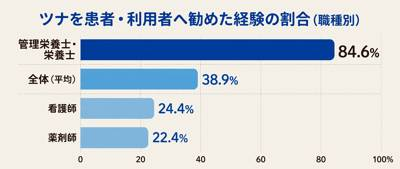
11/02 11:30 🚄 静岡株式会社おいしい健康のプレスリリース 〜管理栄養士の84.6%が推奨、「すでに勧めている」割合が約2.4倍に急増〜 製薬企業にお
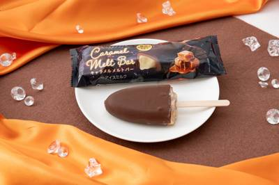
11/02 11:30 ❓ 不明株式会社セブン‐イレブン・ジャパンのプレスリリース 〜セブン‐イレブン店舗にて11月10日（火）より順次発売〜 株式会社セブン
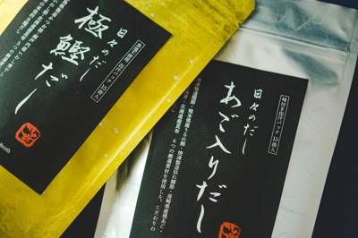
11/02 11:16 ❓ 不明エステールホールディングス株式会社のプレスリリース 素材の旨みを楽しむ「極鰹だし」だしと、焼あごの香ばしさが広がる「あご入りだし
株式会社ドロキア・オラシイタのプレスリリース 2026年11月1日（日）、株式会社サンタプラネットより「焼きたてチーズタルト専門
雪印メグミルク株式会社（本社：東京都港区、代表取締役社長：佐藤 雅俊）は、「牧場の朝（まきばのあさ）ヨーグルト」の発売40周年を
株式会社湖池屋のプレスリリース 湖池屋の人気商品をいつもよりお得にお楽しみいただけます！ 株式会社湖池屋（社長：佐藤章）は、これ
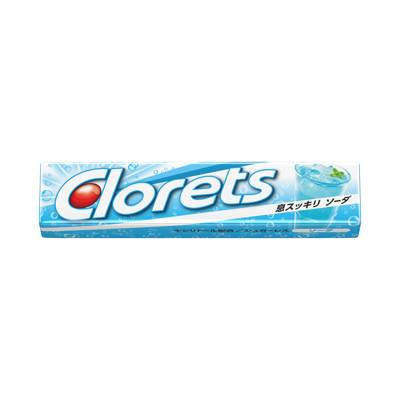
11/02 11:00 🌐 全国モンデリーズ・ジャパン株式会社のプレスリリース 〜甘さ控えめで息スッキリ！仕事や勉強の合間の“スカッと気分転換”にぴったりな一品
ラルフ ローレン 合同会社のプレスリリース World Brewers Cup 2016世界チャンピオン、粕谷 哲 氏が開発 ラ
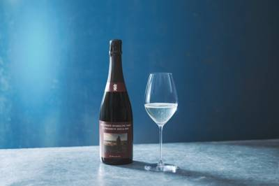
11/02 11:00 🚄 山梨山梨銘醸株式会社のプレスリリース 【2026年11月3日発売】 寛延3年創業、270年余の歴史が育む水のテロワールと長期熟成スパ
株式会社Mizkan Holdingsのプレスリリース ～11月6日（金）より順次公開、レシピ紹介も～ 株式会社Mizkan（
株式会社プレナスのプレスリリース 11.4(水)～11.17(火)の期間開催 株式会社プレナスは、持ち帰り弁当の「Hotto M
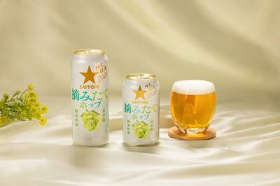
11/02 11:00 🚄 岩手株式会社セブン‐イレブン・ジャパンのプレスリリース ～今年収穫したばかりのホップで、摘みたてホップならではの味わいを今だけ～
株式会社ライフドリンク カンパニーのプレスリリース 株式会社ライフドリンク カンパニー（本社：大阪府大阪市、代表取締役社長：岡野
株式会社ウェルカムのプレスリリース 初登場KEITA MARUYAMAのアートをまとったスイーツアドベントや、teteriaをは
株式会社フォーシーズのプレスリリース 期間限定 2026年11月4日（水）～2027年3月2日（火） 株式会社フォーシーズ（本
ほっともっとのプレスリリース 株式会社プレナスは、持ち帰り弁当の「Hotto Motto (ほっともっと)」を、2026年10月
株式会社 ブルックスのプレスリリース ～常春の気候に育まれた、上質なベトナムアラビカの味わい～ 株式会社ブルックス（本社：神奈
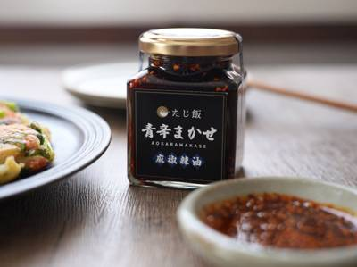
11/02 10:33 ❓ 不明株式会社taji worksのプレスリリース 今回発売となった、辛まかせシリーズ第二弾「青辛まかせ」 株式会社taji work
～チョコレート専門店が贈る濃厚ザッハトルテとアイスケーキ～ 長野県松本市にて、チョコレートと新しい素材を掛け合わせた食体験を提案
株式会社オールハーツ・カンパニーのプレスリリース ～全国のスーパーマーケット・ドラッグストアなどで2026年11月9日（月）より
日仏貿易株式会社のプレスリリース 日仏貿易株式会社（本社：東京都千代田区 / 代表取締役社長：ギヨーム・カルー）は、イタリアの老
日本ピザハット株式会社のプレスリリース 〜新発売の「3種チーズのラザニア風ミートソースピザ」も対象！ゴーダチーズの追加トッピング
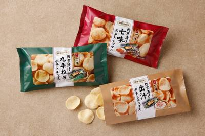
11/02 10:00 🚄 京都株式会社 京都一の傳のプレスリリース 西京味噌のコクを生かした、出汁・七味・九条ねぎの3つの味わい。看板商品「蔵みそ漬」をモチー
ハーゲンダッツ ジャパン株式会社のプレスリリース クリスピーサンド発売25周年を記念し、豪華景品が当たるキャンペーンを開催 ハ
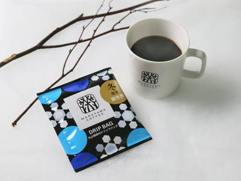
11/02 10:00 🚄 長野株式会社丸山珈琲のプレスリリース 株式会社丸山珈琲（長野県北佐久郡軽井沢町軽井沢、代表取締役：丸山健太郎）は、コーヒーの風味とパ
株式会社ほっかほっか亭総本部のプレスリリース 11月12日から4日間限定！「中華丼」ご購入で、お値段そのまま本格店内せいろ蒸しの
株式会社 学研ホールディングスのプレスリリース 秋田市の「華麗亭」の看板メニューだった「ビーフカレー」がレトルトでよみがえる！
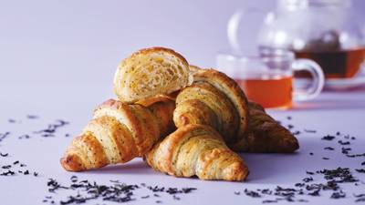
11/02 10:00 🚄 群馬株式会社 スタイルブレッドのプレスリリース ～定番のクロワッサンと一緒に、朝食ビュッフェやティータイムに選ぶ楽しさを～ 焼成冷
イオン株式会社のプレスリリース 冷蔵庫に常備している食材で、大満足のおかずに イオンは１１月４日より順次、「イオン」「イオンス
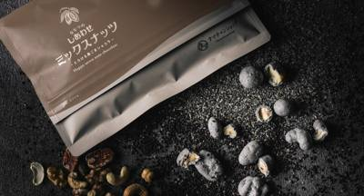
11/02 10:00 🚄 宮崎有限会社九南サービスのプレスリリース ごま好きに贈る7種のナッツと黒ごまを組み合わせたシリーズ新商品 有限会社九南サービス（宮崎
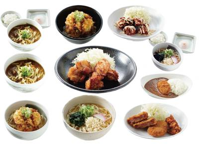
11/02 10:00 🚄 兵庫ユーアールエー株式会社のプレスリリース [やすとみ柚子塩唐揚げ定食1080円] – [上り線限定・1日10食限定]柚
株式会社Sweets HDのプレスリリース 優しいミルククリームとコクのあるピスタチオクリームの2つの味わい。会員様限定で早期予
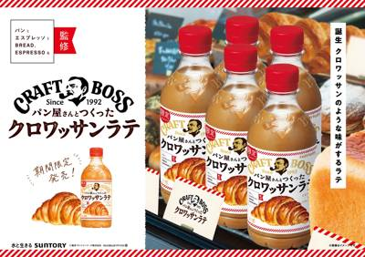
11/02 09:30 ❓ 不明サントリービバレッジ＆フード株式会社のプレスリリース １１月１０日（火）から、“パンとエスプレッソと”店舗でコラボメニューも期間
日本ピザハット株式会社のプレスリリース 〜さらに、発売記念で新商品が加わった「エンジョイ４」がお持ち帰り1,000円に！〜 日
アサヒグループ食品株式会社のプレスリリース 声の仕事術を伝える交通広告ジャックを11月2日から展開 アサヒグループ食品株式会社
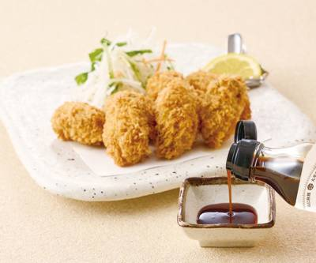
11/02 09:00 🚄 広島株式会社梅の花グループのプレスリリース 牡蠣加工専門の水産会社が厳選した「広島県産牡蠣」を使用した、旨みが濃厚な和風だしの素です
株式会社Marshmallowのプレスリリース ≪奈良県初出店≫大阪で9カ月累計7万個販売の行列店「シュクルシュークリーム」がエ
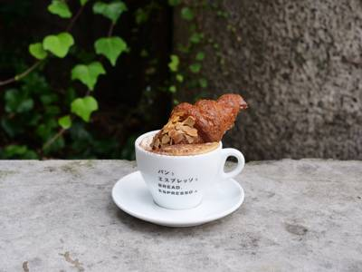
11/02 09:00 🌐 全国株式会社日と々とのプレスリリース 2026年11月10日(火)より、「クラフトボス」コーヒーシリーズから「クラフトボス クロワッ
株式会社KOZOUのプレスリリース 豚ガラスープの旨みと背脂の甘みに生姜が香る一杯 無料のにんにくでさらに濃厚な味わいへ 株式会
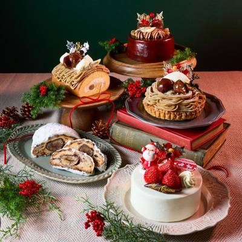
11/02 09:00 🚄 兵庫株式会社中島大祥堂(本社:大阪府八尾市、代表取締役:中島 慎介)は、2026年11月1日(日)より、丹波栗や丹波産いちごなど、丹
 11/02 08:00
❓ 不明
11/02 08:00
❓ 不明
エースコック株式会社のプレスリリース 読売テレビ「テッパン朝ライブ じゅーっと！」と「ワンタンメン」が初コラボ！目覚めるような“
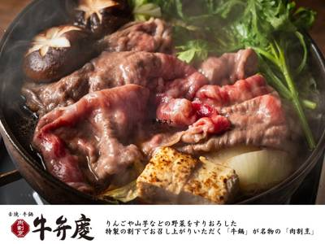
11/02 15:40 🗼 新橋株式会社DDグループのプレスリリース りんごや山芋などの野菜をすりおろした特製の割下でお召し上がりいただく「牛鍋」が名物の『肉割
キスケ株式会社のプレスリリース 主役は、アジフライにたっぷり絡める特製タルタルソース。アジフライ2匹の単品600円、ご飯・味噌汁
Miコーポレーション株式会社のプレスリリース 福岡ご当地VTuber「舞鶴よかと」さんとのコラボCMも放送予定。タコ・イカ・エビ
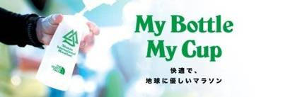
11/02 14:00 🗼 湘南アクアクララ株式会社のプレスリリース 約1,600本のウォーターボトルを提供 「たしかなお水でくらしをととのえる。人と人を信頼で
株式会社モンテローザのプレスリリース 11月3日（火・祝）・4日（水）は店内飲食のメニューが全品半額！11月5日（木）・6日（金
ワタミ株式会社のプレスリリース ワタミ株式会社（本社：東京都大田区、以下「ワタミ」）は、東京都大田区が実施する「令和8年度大田
ワタミ株式会社のプレスリリース ワタミ株式会社（本社：東京都大田区、以下「ワタミ」）は、東京都が実施する食べ残しゼロキャンペー
株式会社SAKIGAKEホールディングスのプレスリリース 2026年11月2日(月)～2026年11月8日(日)まで、天丼専門
株式会社SAKIGAKEホールディングスのプレスリリース 2026年11月2日(月)～2026年11月8日(日)まで札幌みその五
茨城県農林水産部漁政課のプレスリリース ～11月5日（木）～7日（土）に中島水産 関東ほか32店舗で開催～ 茨城県は、2026年
一般社団法人 日本自動車連盟のプレスリリース 11月15日(日)応募締切！Wチャンスで200名様におせち割引クーポンが当たる J
株式会社フォーシーズのプレスリリース 2026年11月4日（水）～11月17日（火） ※ピザーラ公式サイト限定 株式会社フォー
 11/02 13:00
🚄 岡山
11/02 13:00
🚄 岡山
電解質ドリンク「Precision Fuel & Hydration（プレシジョンフューエル&ハイドレーション）
株式会社サラダコスモのプレスリリース 記念日つながりで、「Bigうまい棒」もプレゼント！ 株式会社サラダコスモ（代表取締役：中田
株式会社GENDA GiGO Entertainmentのプレスリリース GiGO限定描き起こしイラストの限定景品続々登場！！
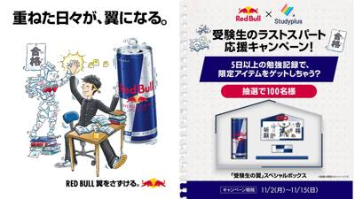
11/02 11:00 ❓ 不明スタディプラス株式会社のプレスリリース 〜重ねた日々が、翼になる。〜 スタディプラス株式会社（本社：東京都千代田区、代表取締役：
Miコーポレーション株式会社のプレスリリース 通常価格から約600円引き！博多水炊きを気軽に楽しめる12日間 福岡発の鶏料理専門
プレミアムウォーター株式会社のプレスリリース ～2026年11月2日（月）スタート～ 良質な水を育む日本有数の水源地から採取した
SRSホールディングス株式会社のプレスリリース 北海道逸品食べ放題や対象北海道和膳メニューが税込220円引きに。お得な北海道グル
株式会社SAKIGAKEホールディングスのプレスリリース 2026年11月2日(月)～2026年11月13日(金)まで札幌みその
 11/02 11:00
🚄 大分
11/02 11:00
🚄 大分
TPS株式会社のプレスリリース 全国50店舗体制へ拡大中！自分専用の一杯が作れるスタイルで支持される大分発の「福恩麻辣湯」が静岡
株式会社ユニシアホールディングスのプレスリリース ～オープン記念キャンペーンで【生ビール290円（税込319円）！】～ 株式会社
カッパ・クリエイト株式会社のプレスリリース 2026年11月4日（水）～11月29日（日）店内飲食・お持ち帰りが対象 コロワイ
株式会社王将フードサービスのプレスリリース ～2027年版 ぎょうざ倶楽部 お客様感謝キャンペーン～ ＜プレスリリース＞ d11
株式会社ニップンのプレスリリース 満足ならプレゼント応募、満足しなければ全額返金 キャンペーン期間：2026年11月2日(月)0
楽彩株式会社のプレスリリース RAKUSAI 11月2日（月）予約販売スタート d130004-162-d110bf14ca84
日本ハム株式会社ちゃうエッセンプロジェクト事務局のプレスリリース 「黄金の3分間ボイル」を守る茹で派と、香ばしさを推す焼き派。日
株式会社あみやき亭のプレスリリース 株式会社あみやき亭が展開する、 国産牛焼肉「あみやき亭（※関東地区限定）」では2026年11
株式会社フェリシモのプレスリリース 「チョコレートバイヤーみり」と「チョコライフデザイナーはる」が世界各地を旅して見つけた119
株式会社ゼンショーホールディングスのプレスリリース 株式会社はま寿司（代表取締役社長：南 哲史 本社：東京都港区）が展開する寿
株式会社ガーデンのプレスリリース 株式会社ガーデン(本社:東京都新宿区 代表取締役社長:川島賢 以下「当社」) が運営する「壱
株式会社MILK DO dore ikuのプレスリリース 株式会社MILK DO dore iku(本社：北海道札幌市中央区、代
株式会社 FS.shakeのプレスリリース 学生証の提示で、2時間の水炊き食べ飲み放題がお得に。学祭の前後の打ち上げにもどうぞ
株式会社フジランドのプレスリリース 東京都港区西新橋のカレー専門店「Spice and Vegetable 夢民（スパイスアンド
株式会社ぐるなびのプレスリリース 開催期間：2026年11月2日（月）～12月31日（木） 株式会社ぐるなび（本社：東京都千代田
CLASS EARTH株式会社のプレスリリース 日本の希少な伝統茶を、スキンケアとともに風呂敷で包んだ特別なセットとしてお届けし
株式会社わかさ生活のプレスリリース 株式会社わかさ生活（本社：京都市下京区）は、株式会社タニタ（本社：東京都板橋区）が展開する「
大台町のプレスリリース 赤坂璃宮 総料理長・水野耕作氏が大台町を現地視察。銀座店にて11月末まで特別コース食材として展開中！ 三
株式会社結のプレスリリース 銀座「マキシム・ド・パリ」で10年、目黒雅叙園で西洋料理部門総料理長を務めた仲田一途が手がける「麺や
株式会社WineBankのプレスリリース ～フランスの食文化と日本の美意識が調和する、新たな食の空間へ～ 株式会社WineBa
株式会社野富のプレスリリース 東大みかん愛好会の学生が企画から販売まで参加。11月6日・7日、オオテモリで1,500名への無料試
株式会社ベストホスピタリティーネットワークのプレスリリース エッグベネディクト&オープンサンド計4種からお好みの2品をセ
株式会社 資生堂パーラーのプレスリリース 公式サイト：https://parlour.shiseido.co.jp/ 「資生堂パ
たまご＆カンパニー株式会社のプレスリリース たまご＆カンパニー株式会社（本社：東京都千代田区、代表取締役社長：都丸雄一）は、「ゴ
PH PARIS JAPON 株式会社のプレスリリース 2026年11月11日（水）より、ピエール・エルメ・パリ 丸の内にて限定
株式会社JR東日本青森商業開発のプレスリリース 開催日時：2026年11月9日（月）～11月15日（日） 東日本旅客鉄道㈱青森事
株式会社クリエイト・レストランツ・ホールディングスのプレスリリース ～華やかなチェリーとフランボワーズの「アマレナローズ」、伝統
トランス・グローバル株式会社のプレスリリース コーヒー、クラフトビール、ファッション、雑貨、スーベニア。日常とカルチャーが交差す
日本ホテル株式会社のプレスリリース 東京駅丸の内駅舎の中に位置する東京ステーションホテル（所在地：東京都千代田区丸の内1-9-1
株式会社ニュー・オータニのプレスリリース 王道フルコースからランチの鉄板焼、本格中華まで。大切な人と過ごす聖夜の限定コースが登場
株式会社Globridgeのプレスリリース 大粒の牡蠣が山盛りの牡蛎鍋は今年も予約殺到中！ライトコースでもっと身近に。 JR新橋
ナショナル麻布株式会社のプレスリリース ナショナル麻布株式会社（本社：港区南麻布4-5-2、代表取締役社長：福村州央）は、運営す
株式会社 船昌のプレスリリース https://dek.world 株式会社 f.dining（本社：東京都大田区、代表取締役社
AFURI株式会社のプレスリリース らーめん・つけ麺を1杯ご注文につき、ハズレなしのガチャに1回参加。2026年11月9日（月）
株式会社 資生堂パーラーのプレスリリース 公式サイト：https://parlour.shiseido.co.jp/ 東京・銀座
サイプレス・ホールディングス株式会社のプレスリリース FC1号に続き、米穀・食品卸のイクタツが加盟 ― サイプレスグループがFC
株式会社B.Nのプレスリリース グランドモール1階に千葉幕張店が登場。お買い物の合間に楽しむフローズンヨーグルト 韓国発のフロー
株式会社CrystalDropのプレスリリース 出汁の奥深い旨みとスパイスの刺激を追求した新スープが誕生！ 選べる辛さと、豊富な
株式会社CLASSICALのプレスリリース 横浜の人気店「炭火焼肉ホルモン うらら」の姉妹店。職人の丁寧な下処理と素材へのごまか
株式会社すかいらーくホールディングスのプレスリリース 【ご提供期間】2026年11月2日㈪よりスタート La・OhanaのHPは
 11/02 08:00
🗼 恵比寿
11/02 08:00
🗼 恵比寿
株式会社ポトマックのプレスリリース ディナータイム限定で楽しむの夜パフェ 一日を締めくくる、⾃分へのご褒美にぴったりの秋限定パフ
とくさと-ふるさと納税還元率ランキング-のプレスリリース ふるさと納税還元率比較サイト【とくさと】 ふるさと納税返礼品の還元率を
株式会社帝国データバンクのプレスリリース 「もやし製造」の倒産・休廃業解散動向（2026年） 株式会社帝国データバンクは、「もや
 11/02 20:19
🚄 軽井沢
11/02 20:19
🚄 軽井沢
株式会社西武・プリンスホテルズワールドワイドのプレスリリース 【日時】2026年11月26日（木） ご取材受付2:00P.M.よ
一般社団法人アニマルウェルフェア・コーポレート・パートナーズ・ジャパンのプレスリリース 〜国内初となる国際認証平飼い卵の供給体制
 11/02 17:50
❓ 不明
11/02 17:50
❓ 不明
高槻市のプレスリリース 市内での新規出店者を応援する「高槻“魅力あるお店”応援プロジェクト」採択店舗が対象 高槻市では、まちのに
クラシル株式会社のプレスリリース 〜保存したレシピをSiriが呼び出し、献立決めの負担を軽減〜 クラシル株式会社（本社：東京都港
KOZOホールディングス株式会社のプレスリリース KOZOホールディングス株式会社の子会社であるアスラポート株式会社（本社：東京
株式会社サンクゼールのプレスリリース 「食」を通じた居場所づくりと地域のつながりを育む活動を後押し 公益財団法人サンクゼール財
株式会社神戸ポートピアホテルのプレスリリース 11/2～12/25の期間、“ホワイトクリスマス”をテーマにしたクリスマスアフタヌ
ベースフード株式会社のプレスリリース 完全栄養※1の主食等を開発・販売するベースフード株式会社（本社：東京都港区、代表取締役：橋
Ｐｉｃｋｌｅｓ Ｌａｂ Ｈｏｋｋａｉｄｏのプレスリリース 「北海道新技術・新製品開発賞 食品部門 大賞」「調味料選手権函館大会2
株式会社俵屋吉富のプレスリリース 年の瀬のあわただしさの中にも、新たな年を迎える喜びに思いを馳せながら過ごす京の冬。俵屋吉富が心
猿田彦珈琲株式会社のプレスリリース 学生証を見せるだけ。授業前の一杯も、放課後のひと休みもお得に 猿⽥彦珈琲株式会社（本社：渋⾕
FiLL'sホールディングス株式会社のプレスリリース 東京タワーを望む東麻布の隠れ家。鹿児島県産地鶏と南九州の恵みを味
学校法人近畿大学のプレスリリース 令和7年（2025年）12月に実施した五代目店主選考会の様子 近畿大学（大阪府東大阪市）では、
みのりみのるプロジェクトのプレスリリース ＪＡ全農は、福岡県内の直営飲食店舗「みのりカフェ福岡パルコ店」で、１１月４日（水）～
みのりみのるプロジェクトのプレスリリース ＪＡ全農は、大阪府・岡山県・広島県内の直営飲食店舗（３店舗）で、１１月４日（水）～１
株式会社 大丸松坂屋百貨店のプレスリリース ●日時：11月3日 (火・祝) 10時～18時 ※商品がなくなり次第終了 ●場所：大
日本ホテル株式会社のプレスリリース Christmas Stay Plan 2026 ホテルメトロポリタン（豊島区西池袋1-6-
株式会社 活美登利のプレスリリース 株式会社活美登利（本社：東京都品川区、代表取締役社長：土屋秀仁）は、タイ王国9号店となる「回
株式会社アトムのプレスリリース コロワイドグループの株式会社アトム（本社：神奈川県横浜市 代表取締役社長：植田剛史）が展開する回
株式会社グリーンハウスフーズのプレスリリース PARIYAのデリ・スイーツを支える新拠点も併設 株式会社グリーンハウスフーズが展
TechMagic株式会社のプレスリリース 〜受け継がれてきた麺を炒める熟練の技をレシピ化し、調理の属人化を解消。イオンモール豊
九州旅客鉄道株式会社のプレスリリース 列車で行こう！牡蠣快速2026 JR九州筑肥線 快速列車に乗って福吉駅まで！ JR九州では
ウッドデザインパーク株式会社のプレスリリース 会員登録・アプリ不要、ドリンク1杯で席の時間を気にせず使え、Wi-Fi・電源も完備
コアグローバルマネジメント株式会社のプレスリリース ウェルカムドリンクの無料提供や、広島の味覚を楽しむ「選べるタパス＆ドリンクセ
株式会社阪急阪神百貨店のプレスリリース 秋深まる北海道から、地元で愛される王道グルメやスイーツ、旬の味覚が集結！ 神戸阪急では、
株式会社モトックスのプレスリリース ソムリエが厳選した、モンドールとワインのセット（全3種）も予約受付中 1915年創業の酒類専
株式会社西武・プリンスホテルズワールドワイドのプレスリリース 新年を祝うごちそうが勢ぞろい。販売期間：2026年12月26日（土
株式会社Antwayのプレスリリース 〜「大陸食道」運営のリョームと提携し、全国12拠点体制へ拡大 〜 手料理サブスク「ツクリオ
Synapse Arrows Pte. Ltd.のプレスリリース 札幌の飲食店 20 店のうち 12 店で、AI の説明が公式情
株式会社おいもやのプレスリリース 昨年は7日間で1,000点以上を販売！人気の「二代目干し芋」をはじめ、お芋チップスやかりんとう
コープデリ生活協同組合連合会のプレスリリース 〜能登のコープいしかわ組合員・地域住民をご招待／ かぬま組子細工体験や日光東照宮を
Avanza Ltd.のプレスリリース 厳格な品質管理と環境に配慮した栽培で届ける、秋限定の味わい アバンザ リミテッド（本社：
株式会社梅の花グループのプレスリリース 乾燥モノとは違う、生きくらげならではの驚きの肉厚感とぷりぷり食感をお届けします。 株式会
株式会社梅の花グループのプレスリリース 彩り鮮やかな10種の温野菜と、梅の花で人気のメニューが一度に楽しめる「梅の花セット」が新
株式会社白寿生科学研究所のプレスリリース 1本でカルシウム300mgを補給。乳アレルギー対応商品もラインアップ 人々の健康で豊か
クリスチャン・ディオール合同会社のプレスリリース © MAX ZIMMERMAN 数多くのミシュランの星を獲得したシェフ、ヤニッ
株式会社京王プラザホテル札幌のプレスリリース 和食・洋食・中華それぞれの専門シェフがいるホテルならではの華やかなおせち料理が、新
カスフル株式会社のプレスリリース 数量限定・早割20%OFFほか応援購入リターンを用意。酒粕研究の美容根拠にこだわった、天然酒粕
株式会社ワインライスのプレスリリース タータンチェック柄とジンジャーブレッドマンのお顔ケーキは今年の新作。カラフルなスプリンクル
とくさと-ふるさと納税還元率ランキング-のプレスリリース ふるさと納税還元率比較サイト【とくさと】 ふるさと納税返礼品の還元率を
一般社団法人おにぎり協会のプレスリリース 働く人や学生に、ごはんを選ぶ楽しさを。おにぎり協会が会員企業をつなぎ、11月2日から西
朝霧乳業株式会社のプレスリリース 駅ナカ・百貨店を中心に、秋のミルクスイーツを展開 朝霧乳業株式会社（本社：静岡県富士宮市、代表
株式会社アグロス・カワモトのプレスリリース 2026年冬にプレオープン、2027年3月にグランドオープン。 育てる喜び、味わう楽
豊橋市のプレスリリース 令和８年10月27日（火）、愛知県豊橋市の西郷小学校で１～６年生90人が参加し、毎年恒例の「次郎柿」の
株式会社デンソーのプレスリリース 株式会社デンソーは、2026年11月11日（水）から13日（金）まで東京ビッグサイトで開催され
オルニ株式会社のプレスリリース 生しじみラーメン『オルニ』五反田店が11月より、お酒もしじみラーメンも楽しめる「ラーメンスナック
とくさと-ふるさと納税還元率ランキング-のプレスリリース ふるさと納税還元率比較サイト【とくさと】 ふるさと納税返礼品の還元率を
株式会社オークラ ニッコー ホテルマネジメントのプレスリリース 洋の華やぎと和の洗練、島の美食が紡ぐ聖夜のおもてなし グランドニ
株式会社Backpackers' Japanのプレスリリース 11月1日、東京・八重洲の新たな複合施設TOFROM Y
ASTRA FOOD PLAN株式会社のプレスリリース 同社代表 加納千裕が協会理事に就任。協会の設立発表会に企業・行政関係者な
Miコーポレーション株式会社のプレスリリース 飲み放題付きでお得な6種のコースが新しく登場! 福岡発の鶏料理専門店「トリヤマルハ
株式会社はくばくのプレスリリース おにまる・はくばく・おにぎり協会が連携 『主食改革』を提唱する穀物のリーディングカンパニー
株式会社焼肉坂井ホールディングスのプレスリリース ～ 期間限定・豚骨スープの鶏ちゃんこ鍋など4品の名物料理をご用意いたします～
ヨシケイ開発株式会社のプレスリリース つくる人から笑顔に。をテーマに全国でミールキット宅配サービスを提供するヨシケイグループ（
パティスリー洛甘舎のプレスリリース 栗のお菓子が恋しくなる季節。京都のパティスリー洛甘舎から「PREMIUM 丹波栗モンブラン」
株式会社ゼンショーホールディングスのプレスリリース 株式会社ジョリーパスタ（代表取締役社長：安元 祐貴 本社：東京都港区）が展
株式会社江戸一のプレスリリース 11/7(土)全面リニューアルオープン！限定メニューも食べ放題！ 11/7(土)全面リニューアル
丸山株式会社のプレスリリース 国内初となる国際認証平飼い卵の供給体制を確立、持続可能な食の選択肢を日本市場へ 農事組合法人蔵王
株式会社さすがやのプレスリリース ～金・プラチナが店頭買取相場から最大３０％アップ～ 買取専門店を全国に展開する株式会社さすが
株式会社チャンピオンカレーのプレスリリース 定番レトルトから人気の「生カレー」、お菓子との詰め合わせまで。11月30日まで早割価
株式会社エフピコのプレスリリース 〜お弁当容器の使用が、障がいのある社員のQOL向上につながります〜 食品トレー・容器の製造・販
株式会社SAKIGAKEホールディングスのプレスリリース 2026年11月2日(月)～2026年12月1日(火)までラーメン魁力
イオン株式会社のプレスリリース 日本最大のだし茶漬け専門チェーン 株式会社イオンイーハート(所在地:千葉県千葉市、代表取締役社長
株式会社ゆで太郎システムのプレスリリース ～年間約1,000トンのお米を11月中旬から順次切り替え。生産者との継続的な取り組みを
株式会社ロイヤルクラシックのプレスリリース 他にも苺のショートケーキや、ブッシュ・ド・ノエル など 全3種をラインアップ ホテ
有限会社ナチュラルスマイルのプレスリリース 石焼き生パスタ30種類以上のメニューやドリンクバー付きの料金、共同駐車場17台の配置
東洋ライス株式会社のプレスリリース 左から、東洋ライス株式会社 代表取締役社長 阪本 哲生、みやき町長 岡 毅 この度、佐賀県み
株式会社トータルヘルスコンサルティング（本社：東京都千代田区東神田、代表取締役社長：森重一雄）は、11月7日（土）・8日（日）に
大台町のプレスリリース 大台町で三重県唯一のチョウザメ養殖に取り組むスタージョンロハスと、地域の特産品を製造・販売する株式会社宮
株式会社MARUのプレスリリース 昭和25年創業の製餡所の極上餡子で手掛けるのは世代を超えて親しまれてきた今川焼き。日常のおやつ
グローバルフードソリューション株式会社のプレスリリース 〜「味・屋号・想い」を受け継ぎ、当事者として厨房に立ち、世界に続くブラン
株式会社タベテクのプレスリリース タベテク、有償実証「マイクロラボPoC」の受付を開始トルコから日本への81日間の柑橘輸送実証で
株式会社ホットランドホールディングスのプレスリリース ～ ご予約は11/9（月）より、店頭もしくは特設会場（※電話予約不可）にて
 11/02 08:00
🚄 愛知
11/02 08:00
🚄 愛知
一般社団法人豊川青年会議所のプレスリリース シェフ賞は「めでたいぜんざい」。グランプリ受賞商品と本選出場商品の一部を、御開帳期間
株式会社紀ノ國屋のプレスリリース 株式会社紀ノ國屋は、11月6日（金）よりウインターギフト2026の承りを開始します。全国各地の
 11/02 08:00
❓ 不明
11/02 08:00
❓ 不明
株式会社アオキスーパーのプレスリリース 株式会社アオキスーパーは、2026年11月２日よりクラシル株式会社が提供する節約アプリ
株式会社ロッテのプレスリリース 長年の“雪見だいふく愛”が止まらない！愛おしさが溢れる自然体な姿に注目！ 株式会社ロッテ（東京
株式会社イングリウッドのプレスリリース データとテクノロジーの力で小売業界のあらゆる課題を解決するリテールテックカンパニーである
株式会社WDI JAPANのプレスリリース ニューアルバムの世界観を表現したスペシャルカクテルが登場、店内ではスペシャルプログラ
株式会社ヤガイのプレスリリース Xにて豪華賞品が当たるプレゼントキャンペーンも開催！ 11月11日に記念日を制定する株式会社ヤガ
株式会社船橋屋のプレスリリース 和スイーツの試食と若手社員との対話を通じたキャリア形成支援。参加学生のアンケート満足度100％
株式会社Cqreeのプレスリリース 中食事業を中心に展開する株式会社Cqree(本社:東京都品川区、代表取締役社長:鶴田晃平)は
株式会社 中尾清月堂のプレスリリース 開けてみるまで、わからない。回してみるまで、わからない。限定BOXの販売と、空くじなしのガ
株式会社Cake.jpのプレスリリース 11月2日より、オーナメント＆「Merry Christmas」メッセージを追加可能に
カゴメディア株式会社のプレスリリース ― 10分で3,500台が完売したあのイヤホンが復活！ ― カゴメディア株式会社（本社：東
三井農林株式会社のプレスリリース 三井農林株式会社（所在地：東京都港区 代表取締役社長：藤井 洋 以下、当社）では、お茶を通して
石屋製菓株式会社のプレスリリース 白い恋人パークイベントのお知らせ 石屋商事株式会社（本社：北海道札幌市西区、代表取締役社長：
株式会社こみベーカリーのプレスリリース 全国放送後、500件超の注文を記録。10月29日から順次出店 株式会社こみベーカリー（本
日清オイリオグループ株式会社のプレスリリース 応募期間：２０２６年１１月２日（月） ～２０２７年１月１７日（日）２３時５９分
ブルガリ・ジャパン合同会社のプレスリリース — ホリデーシーズンの温もりを5つのフレーバーで描く、心ほどけるチョコレートコレクシ
岡村製油株式会社のプレスリリース 2026年11月14日(土)9時～13時で感謝FES開催！綿実油を使用した商品の直販やグルメコ
毎日が来店スタンプ2倍、周年記念Tシャツ、創業祭特別価格クーポンなど 特別企画が目白押し！ 株式会社吉兵衛（本社：神戸市中央区、
ヒガシマル醬油株式会社のプレスリリース どのメニューも知って欲しいから・・・全レシピ（つまり243種）をカード化！243レシピ※
株式会社サンパークのプレスリリース メディアでも話題沸騰の”生ドーナツ”専門店『we♡donuts』が、2026年第11弾となる
APAMAN株式会社のプレスリリース 食事・アフタヌーンティーや専用フォトフレームでの記念撮影を楽しめる空間に。新豊洲・芝公園の
合同会社ロチャのプレスリリース 11月7日〜12日、TAKANAWA GATEWAY CITY「マチアイ」で開催！12月21日の
フォンテラジャパン株式会社のプレスリリース 〜11月12日にはグラスフェッドチーズのプレゼンテーションと特別メニューの試食を実施
株式会社マルハンダイニングのプレスリリース Scropのバリスタ・焙煎士が厳選した11月のコーヒーセレクション 株式会社マルハン
株式会社テンポスホールディングスのプレスリリース 女性3,480円、男性3,980円！いつものお気に入りも、普段は注文をためらう
全国農業協同組合連合会のプレスリリース 「全農みんなの子ども料理教室」を神奈川県で開催！ ～全農グループ各社提供の国産農畜産物で
アールイー株式会社のプレスリリース １日丸ごと楽しめる東京都産の農産物が集まるマルシェをアールイーが企画・運営を担当 アールイー
株式会社よみうりランドのプレスリリース 読売新聞東京本社、読売巨人軍、よみうりランドの３社が、東京都稲城市のよみうりランド遊園
株式会社トランジットホールディングスのプレスリリース ランチやディナー、会食からパーティーまで。人々が集い、つながるコミュニケー
キユーピー株式会社のプレスリリース サステナビリティプロジェクト「heeee!」第7弾に参画。11月3日(火・祝)～11月22日
株式会社ヨックモックのプレスリリース ～遠方で暮らす大切な方へ、心あたたまる贈り物を。～ 株式会社ヨックモック（代表取締役社長：
株式会社ステディスタディのプレスリリース 〜高校生が考案したランチ「和み・おもいやりプレート」を期間限定提供〜 「ちょっとした“
北海道商工会連合会のプレスリリース ～北海道の特産品やご当地グルメを、東京・三軒茶屋で楽しめる2日間！～ 【イベント名】 なまら
株式会社MY HONEYのプレスリリース 〜「からだに優しいアカシアはちみつ」や人気の「ナッツの蜂蜜漬け」など、こだわりのライン
コンラッド東京のプレスリリース 小嶋陽菜氏が手掛けるライフスタイルブランドの世界観を表現した「フェスティブアフタヌーンティー」を
株式会社heart relationのプレスリリース 毎年大変好評をいただいているコラボレーションが今年は大阪にも拡大。特別なア
株式会社ファインフードシステムズのプレスリリース MARUNOUCHI BRIGHT HOLIDAY「ハリー・ポッター」丸の内を
株式会社ほぼ日のプレスリリース 2021年からつづく毎年恒例のおたのしみ「りんご狩りかもしれない展」を今年も渋谷PARCO８Fの
株式会社GORILLA COMPANYのプレスリリース 町田・鶴川香山園内にある和食レストラン「桜梅桃李」は、2026年10月1
株式会社ビオックのプレスリリース 研究・医療・保険の専門家とともに「食」の立場から健康産業の未来について語る 室町時代創業の「糀
パルシステム生活協同組合連合会のプレスリリース 漫才でもっと身近に 生活協同組合パルシステム神奈川（本部：横浜市港北区、理事長：
ボンディッシュ株式会社のプレスリリース “おいしい一皿で絆をつなぐ”社員食堂・ケータリングの企画運営を行うボンディッシュ株式会
住友不動産商業マネジメント株式会社のプレスリリース 住友不動産商業マネジメント株式会社（本社：東京都新宿区、代表取締役社長：山本
ヒルトン東京のプレスリリース ホテル内2か所のバーでご用意するおしゃれな〆パフェ バー限定のウィンターパフェ2種類 【2026年
株式会社ノダキのプレスリリース 老舗商社ノダキが「六代目野田貴商店」を通じて食・健康・ライフスタイルの6ブースを結集。11月3日
株式会社西武・プリンスホテルズワールドワイドのプレスリリース 【開催日】 2026年11月27日（金）・28日(土) 軽井沢 浅
株式会社スペースファクトリーのプレスリリース 専用自販機での販売も決定！ 『ファイナルファンタジーXIV』至天の座アルカディア
兼松株式会社のプレスリリース 兼松株式会社（以下、「兼松」）は、Taiwan Premium Rice Enterprise
株式会社オージーフーズのプレスリリース ～希少な「北海道産秋鮭いくら」を惜しみなく使用。美味しさそのままに届ける冷蔵・個包装のお
株式会社UnlocXのプレスリリース ウキクサ由来の次世代タンパク源、陸上養殖、食品アップサイクル、精密発酵など注目領域のイノベ
コープデリ生活協同組合連合会のプレスリリース コープデリ生活協同組合連合会（本部：埼玉県さいたま市、代表理事理事長：熊﨑 伸）
マリオット・インターナショナルのプレスリリース 約1,000本の薔薇で華やかに彩られたクリスマスツリーが登場 １階イタリア料理「
岐阜県観光企画課のプレスリリース 〜東美濃自慢の郷土食「五平餅」と地域の特産品が勢ぞろい〜 東美濃歴史街道協議会は、地域の郷土
明海グループ株式会社のプレスリリース 稚内名物「たこしゃぶ」をはじめ北海道の味覚が勢揃い。一年の締めくくりを彩る年末限定ディナー
キユーピー株式会社のプレスリリース 申込期間：2026年11月2日(月)13:00～11月10日(火)16:00 キユーピー株式
株式会社プラスのプレスリリース ㈱プラスが運営する「産直市場よってって」は滋賀県初出店となる新店「産直市場よってってクロスモール
学校法人近畿大学のプレスリリース 令和8年（2026年）7月オープンキャンパスでの出店の様子 近畿大学アカデミックシアター（大阪
株式会社前川製作所のプレスリリース 産業用冷凍機をはじめ、各種産業機械の製造・販売およびプラントの設計・施工を手がける株式会社
株式会社つつじ庵のプレスリリース 群馬県渋川市の「上州・村の駅」では、実りの季節を迎えた群馬の農産物の魅力を、見て、味わって、楽
一般社団法人発酵性食物繊維普及プロジェクトのプレスリリース 一般社団法人発酵性食物繊維普及プロジェクトは、10月31日（土）、秋
学校法人 中村専修学園のプレスリリース プロ顔負けの豊富な食やサービスの企画！昨年約9,000名来場いただいた大好評の学園祭を今
北広島市役所のプレスリリース 「白い恋人」や「ベーコン節」の試食も！ 2026年11月7日（土）に大阪で開催される「さとふる祭り
株式会社ジョインのプレスリリース 生産者・料理人・ワイナリーの想いが一皿につながる 株式会社ジョイン（本社：山形県山形市、代表
株式会社マルヤナギ小倉屋のプレスリリース 11/4（水）〜11/10（火）阪急うめだ本店地下2階「～まだ知らない食の魅力に出会う
スターバックスコーヒージャパン株式会社のプレスリリース 初の「Be a Santaクッキー トッピング」登場や拡充した「こども食
株式会社西武・プリンスホテルズワールドワイドのプレスリリース 大切な人と過ごす特別なひとときを、美食とともに。 札幌プリンスホテ
株式会社日本アクセスのプレスリリース 株式会社日本アクセス（所在地：東京都品川区、代表取締役社長 社長執行役員CEO：服部 真也
デュシットインターナショナルのプレスリリース タイの大手ホテル・不動産開発会社であるデュシット・インターナショナルが展開する高級
株式会社 熊谷青果市場のプレスリリース 「完熟いちごのクリスマスショートケーキ」は先行予約がお得！ご予約は公式LINEで受付中。
コンラッド大阪のプレスリリース コンラッド東京と同時開催 「Her lip to Lounge 2026」フェスティブアフタヌー
株式会社NEO FLAG.のプレスリリース プロ司会・表彰・映像制作・写真撮影など8種を用意。企画から当日運営まで、イベント事業
株式会社Sweets HDのプレスリリース ひとつのケーキで楽しむ2つの味わいと、hymiiが特別にデザインしたクリスマスブーケ
 11/02 11:43
🚄 東北
11/02 11:43
🚄 東北
LH 株式会社のプレスリリース 出張カキ小屋 牡蠣奉行（かきぶぎょう）：牡蠣小屋実行委員会 【協賛】サッポロビール株式会社 東北
株式会社 博多ステーションビルのプレスリリース １番人気は「唐芋レアケーキラブリー」また、ラブリーの生地を使った焼菓子「焼きラブ
株式会社Cqreeのプレスリリース 飲食店・食品関連事業者に向け、環境負荷低減と現場での使いやすさを両立する容器を提供 全国約4
パルシステム生活協同組合連合会のプレスリリース 「被爆アオギリ二世」植樹にちなみ平和メッセージ121件も 生活協同組合パルシステ
株式会社柿安本店のプレスリリース WEB予約ならオリジナルアクリルコースターも付いてくる！ 明治4年（1871年）、牛鍋店を創
エイ・エイ・ピー・シー・ジャパン株式会社のプレスリリース 12月24日・25日はクリスマス限定メニュー、12月28日〜1月3日は
株式会社マリノのプレスリリース はくばくのもち麦を昆布出汁で炊き上げ、おにまる特製の梅味噌で仕上げた「蒸し鶏と梅味噌のもち麦むす
LH 株式会社のプレスリリース 出張カキ小屋 牡蠣奉行（かきぶぎょう）：牡蠣小屋実行委員会 【協賛】サッポロビール株式会社 東北
星野物産株式会社のプレスリリース 群馬県内32店舗のパン店を巡るスタンプラリーを開催～2026年11月1日よりスタート！家族で楽
株式会社テンポスホールディングスのプレスリリース 黒ごまだれを絡めた名物餃子や濃厚担々麺など全8品。職人の手仕事が生む黒ごまの豊
サンエックス株式会社のプレスリリース ～「にゃんにゃんにゃんこ飯店」で「SPINNS」とのコラボレーションアイテムを先行販売～
 11/02 10:00
🚄 東北
11/02 10:00
🚄 東北
LH 株式会社のプレスリリース 出張カキ小屋 牡蠣奉行（かきぶぎょう）：牡蠣小屋実行委員会 【協賛】サッポロビール株式会社 東北
 11/02 10:00
🚄 東北
11/02 10:00
🚄 東北
LH 株式会社のプレスリリース 出張カキ小屋 牡蠣奉行（かきぶぎょう）：牡蠣小屋実行委員会 【協賛】サッポロビール株式会社 東北
株式会社スープストックトーキョーのプレスリリース 株式会社スープストックトーキョー（本社所在地：東京都目黒区、取締役社長：工藤萌
富山県のプレスリリース 地域の魅力を寿司を通じて発信する富山県では、11月を「寿司といえば、富山」月間として、官民一体で多彩なイ
早駒運輸株式会社のプレスリリース ～湊川隧道の保存・活用に向けたSDGsな取組み～ 令和8年10月19日（月）に、兵庫・湊川隧道
株式会社船橋屋のプレスリリース 木製品の販売やワークショップ、亀戸グルメが集結。菊まつり期間中に親子で楽しめる2日間 株式会社船
 11/02 08:30
🚄 愛媛
11/02 08:30
🚄 愛媛
株式会社エス・ピー・シーのプレスリリース [愛媛県県民文化会館 開館40周年記念「キクタンゲ」]2026年11月22日(日) え
株式会社信濃屋食品のプレスリリース メディア・SNSユーザー向け合同試食会「おいしい博覧会 2026秋冬」出展レポート 1930
株式会社横浜ビールのプレスリリース 横浜から全国へ。地域の生産者やブルワリーとの協働を通じて、それぞれの地域の魅力を一杯のビール
バカルディ ジャパン株式会社のプレスリリース 俳優・高杉真宙さんを起用したキャンペーンも11月10日（火）スタート！星野リゾート
株式会社ロイヤルマイルのプレスリリース 特別セミナー満員御礼！先行試飲では100％が「もう一度飲みたい」、94％が「人にすすめた
サッポロビール株式会社のプレスリリース タイアップ企画第2弾！北海道の未来をつなぐ「オホーツク流氷トラスト運動」を応援 サッポロ
アサヒビール株式会社のプレスリリース アサヒビール株式会社（本社 東京、社長 松山一雄）は、果実や素材の食感を生かした「まるご
アサヒビール株式会社のプレスリリース 11月25日から数量限定発売 アサヒビール株式会社（本社 東京、社長 松山一雄）は、プレ
株式会社アンデルセン・パン生活文化研究所のプレスリリース 株式会社タカキベーカリーは、フランス・アルザス地方の冬の食文化に着想を
パルシステム生活協同組合連合会のプレスリリース トラック試乗や記念撮影も 生活協同組合パルシステム東京（本部：東京都新宿区、理事
長野県のプレスリリース 今年も長野ワインの新酒の季節がやってきました 11月11日（水）より、今年収穫したばかりのブドウで出来
公益財団法人神戸ファッション協会のプレスリリース 神戸・灘のお酒と神戸の人気スイーツを楽しむ1日限定イベント 2026年11月6
阪急阪神不動産株式会社のプレスリリース タイムアウトマーケット大阪では11月、新たな2店舗がオープン。フランス菓子の技術と独創性
阪急阪神不動産株式会社のプレスリリース タイムアウトマーケット大阪では11月、新たな2店舗がオープン。フランス菓子の技術と独創性
アサヒビール株式会社のプレスリリース 11月10日から16日は「アルコール関連問題啓発週間」 毎年11月10日から16日はアル
菊水酒造株式会社のプレスリリース 菊水酒造株式会社（新潟県新発田市・代表取締役髙澤大介）の「KIKUSUI蔵GARDEN（キクス
GOSSO株式会社のプレスリリース 楽しく沸ける正統派アイドル、焼肉とともに全国ツアー!? GOSSO株式会社（本社：東京都渋
株式会社紫野和久傳のプレスリリース 56種3万本の木々が育つ森で、ちび丸提灯づくりや限定フードを。大人も子どもも楽しめる特別な一
株式会社日庄マーケティング・ソリューションのプレスリリース ～県内4つの商工会エリアの逸品を中野マルイで販売～ 徳島県商工会連合
株式会社 FS.shakeのプレスリリース 新宿・歌舞伎町の海鮮居酒屋。あて巻き寿司・浜焼き・刺身に、2時間の食べ放題・飲み放題
三立化工機株式会社のプレスリリース 「極上味噌」「深うまねぎ味噌」「九州豚骨」がお得に楽しめる5日間 「純米濃厚味噌ラーメンゑび
株式会社doubleのプレスリリース ～圧倒的コスパで大満足！旨味たっぷりの名物「かっちゃん餃子」とオープン記念の1円ドリンクで
UNCHI株式会社のプレスリリース 10月28日から6日間、全営業時間ですべてのラーメンをコラボ仕様に。 大阪・西中島の「人類み
日本酒造組合中央会のプレスリリース ～大会の様子はYouTubeでライブ配信～ 写真は前回大会「第44回全国きき酒選手権大会」
株式会社ファイブニーズのプレスリリース 株式会社ファイブニーズは、千葉県千葉市中央区に「お酒買取専門店 FiveNeeds 千葉
ニラックス株式会社のプレスリリース 【ご提供期間】2026年11月1日（日）～ 2027年1月11日（月） ペルティカのHPはこ
ミライドア株式会社のプレスリリース ミライドア株式会社（本社：東京都港区、代表取締役社長：松本 高一、以下「ミライドア」）は、長
アイブリッジ株式会社のプレスリリース ～全国の30～70歳1,000名に調査 予算は「4,000円～5,000円未満」が最多、購
株式会社クラダシのプレスリリース ～年間約4,600セット販売の人気商品を定期コース化し、1本750円（初回は675円）で気軽に
株式会社こじまのプレスリリース 11月1日〜7日の7日間、ディナー限定。角ハイボール・レモンサワーも1杯3円で、地域の皆様へ感謝
株式会社こじまのプレスリリース 角ハイボール・レモンサワーも対象。11月1日から7日まで、ディナータイム限定で開催 「焼肉こじま
音源: Drop It Like It’s Hot x Staying Alive
Small text, big feelings. Use it for an encouraging message, a hint at an announcement, or something your audience will relate to. Swap in your own text, and it works for any niche.
音源: Original audio
Battery at 1%? Not for long. Take your audience from 1% to 100% with a before and after that shows a glow-up, a mood switch, or an energy boost. It’s big in beauty and wellness, but it works for any transformation. Your recharge can be a best friend, a product, or a service.
News alert: toggle on. This is an easy way to tease an announcement, a news post, or a new series on your channel. It’s simple to recreate and works for any niche.